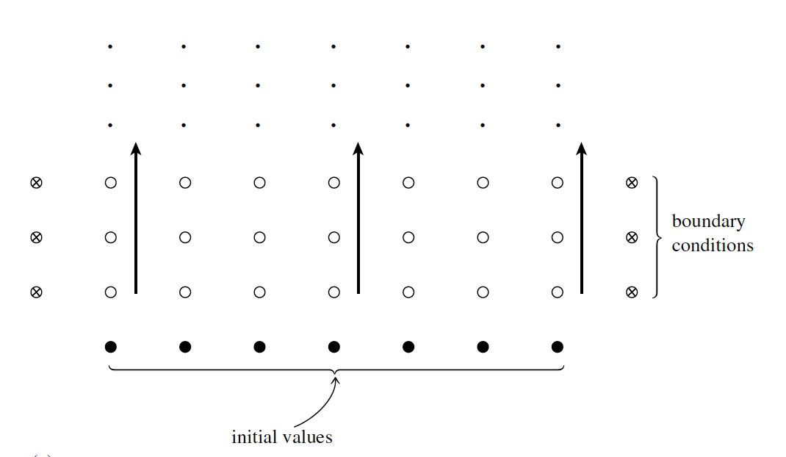
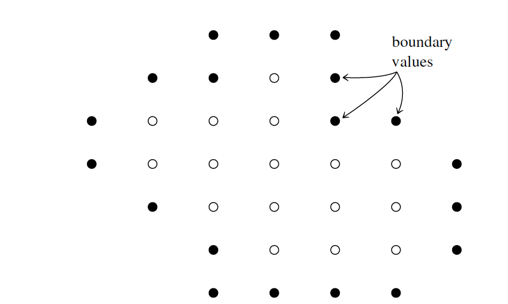

Introduction to PDEs and classifications
Contents
Introduction to PDEs and classifications#
Partial Differential Equations (PDEs) are part of many continuous physical systems, fluids, plasma, Electromagnetic fields, etc. This chapter briefly summarizes the classification of the most common PDEs.
1. Mathematical Classification#
These can be classified as complete PDEs EQs or by the different terms in the PDEs.
1.1 Mathematical Classification on PDEs#
The PDEs can be classified into three big categories, hyperbolic, parabolic, and elliptic. These three categories differ in their characteristics, i.e., propagation curves.
1.1.1 Hyperbolic eq. (wave eq.)#
The following is the typical example of a 1D hyperbolic eq., i.e., wave eq.
where \(v = const\) is the velocity of wave propagation
1.1.2 Parabolic eq. (diffusion eq.)#
The prototypical parabolic equation is the so-called diffusion equation:
where \(D\) is the diffusion coefficient.
1.1.3 Elliptic eq. (Poisson eq.)#
Finally, the prototypical elliptic eq. is the Poisson eq.
where \(\rho\) is the source term. If the source term equals zero, the equation is Laplace’s equation.
1.2 Mathematical Classification on the various terms in the PDEs#
One can also separate individual terms in the PDEs. These terms can be treated with different numerical techniques since they typically have very different properties and stiffness.
1.2.1 Linear or source (or sink) terms#
Source (or sink) terms do not have spatial derivatives and depend on the variable that needs to be advanced in time. Some examples are ionization and recombination, chemical reactions, and collisional terms. This term can be very stiff, and often implicit methods can be easily implemented.
1.2.2 Advection terms#
Advection or convection terms are single derivatives (\(\frac{\partial u}{\partial x}\)). Often solved explicitly, and the CFL condition originally comes from this term.
1.2.3 Diffusive terms#
Diffusive terms are single derivatives (\(\frac{\partial D \partial u}{\partial x^2}\)), where \(D\) is the diffusive coefficient). Some examples are thermal conduction or ohmic diffusion. Often solved explicitly, and the CFL condition originally comes from this term.
Sometimes, some terms are very hard to put in this classification and are a combination or mix of several. For instance, the Hall term and ambipolar diffusion (also known as Pedersen resistivity).
2 Computational Classification#
Computationally, the previous classification is not very meaningful. Therefore, the best is to classify in propagating and static functions.
2.1 Initial value (Cauchy) problems#
The equations describe how the information \(u(x,t)\) propagates forward in time. Those equations require that the information \(u\) is given at some initial time (\(t_0\)) for all \(x\). This is exemplified in the following figure.

In the figure, initial values are given on a one-time slice, and it is desired to advance the solution in time, successive computing rows of open dots in the direction shown by the arrows. Boundary conditions at the left and right edges of each row (\(\bigotimes\)) must also be supplied, but only one row at a time. Only one, or a few, previous rows need to be maintained in memory. Note Eq. 1 and 2 are part of this classification.
2.2 Boundary problems#
Single static functions \(u(x,y)\) satisfy the equation within some \((x,y)\) region of interest. These require some desired behavior on the boundary of the region of interest. This is exemplified in the following figure.

In the figure, boundary values are specified around the edge of a grid, and an iterative process is employed to find the values of all the internal points (open circles). All grid points must be maintained in memory. Note Eq. 3 falls in this classification.
We will focus on initial value (Cauchy) problems in the following. A large class of time-evolution PDEs in 1D can be cast into the form of flux conservative equation.
where \({\bf u}\) and \({\bf F}\) are vectors, and where \({\bf F}\) may depend on \({\bf u}\) and/or also on spatial derivatives of \(u\). The vector \({\bf F}\) is called the conserved flux.
One of the simplest flux-conservative equations of the Cauchy problems is Burger’s eq. Proceed to exercise ex_2a_analytical to further understand Burger’s eq:
When the diffusion term is absent (i.e., \(\nu=0\)), Burgers’ equation becomes the inviscid Burgers’ equation:
and exercise 2 focuses on this expression to build the numerical code. Note that this expression is part of the hyperbolic equations as follows:
can be rewritten as a set of 1st-order eq.
where